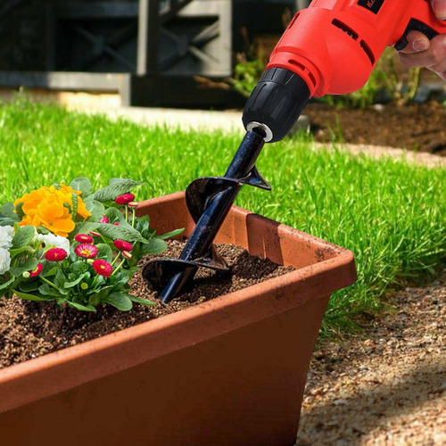
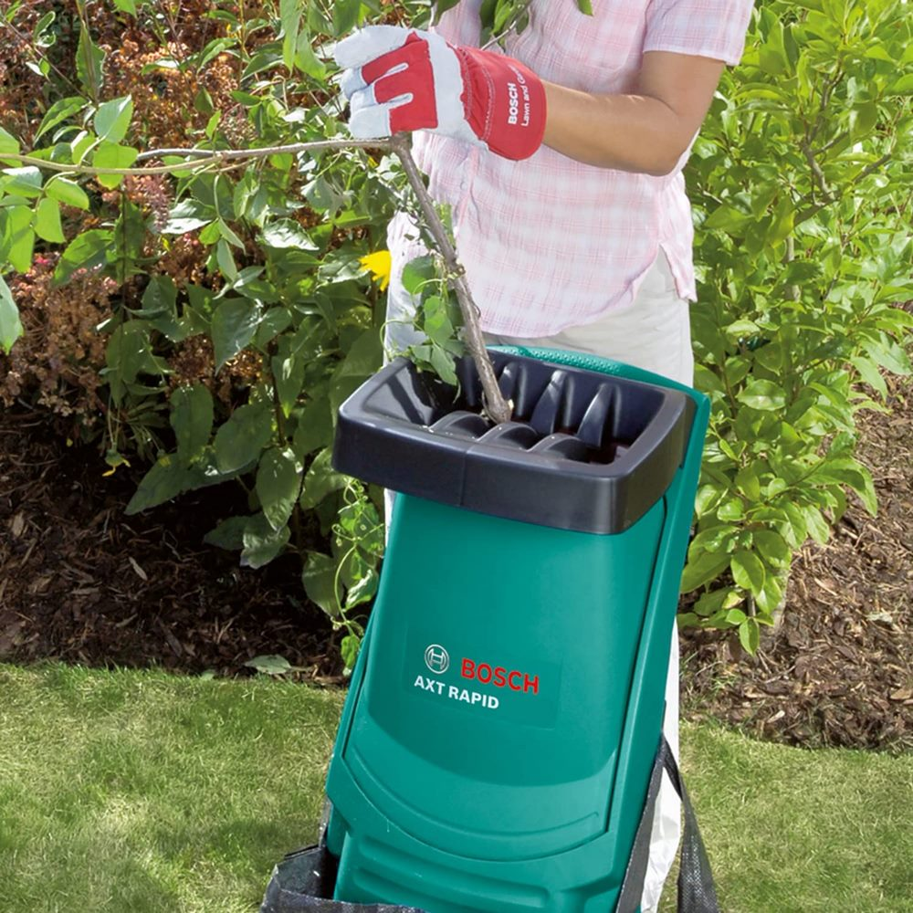
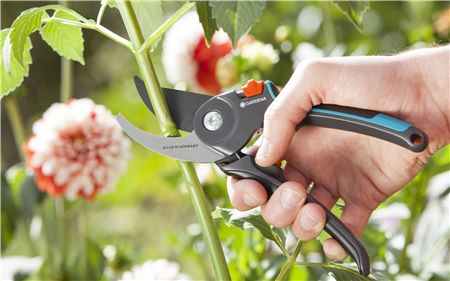
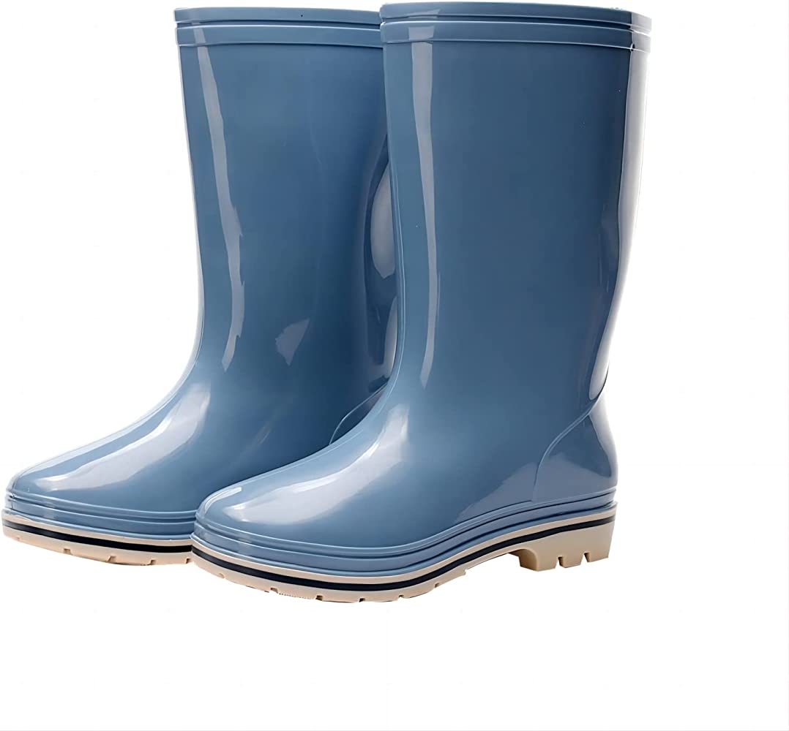
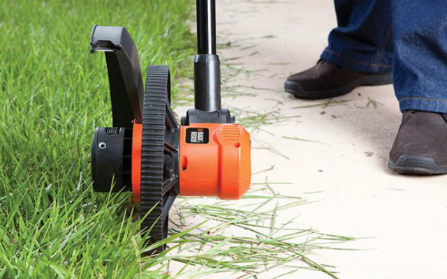

Introducción
En esta página encontraremos las palabras más comunes para la letra B.
| Barrena | Biotrituradora |
|---|---|
|  |  |
| Es una herramienta manual utilizada para perforar agujeros en el suelo. | También conocida como trituradora de ramas, es una herramienta utilizada para triturar y desmenuzar ramas y restos de poda. |
| Bypass | Botas |
|  |  |
| Un cortasetos de tipo bypass es una herramienta de corte utilizada para dar forma y recortar arbustos y setos. | Son calzado resistente diseñado específicamente para trabajar en el jardín. |
| Bordeadora | |
|  | |
| Es una herramienta eléctrica o a gasolina utilizada para recortar y perfilar los bordes de céspedes, caminos o áreas donde la cortadora de césped no puede llegar con facilidad. | |